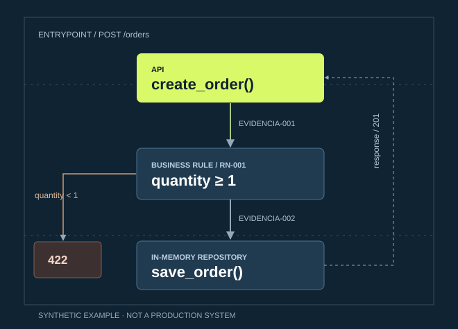
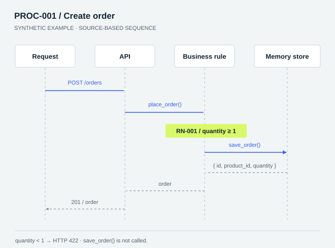

INGENIERÍA INVERSA CON EVIDENCIA
El código cuenta
una historia.
Hazla visible.
De una carpeta llena de archivos a una explicación del sistema: arquitectura, reglas, datos y el recorrido completo de una operación.
Markdown portable · Sin API obligatoria · GPL-2.0-only

LA PREGUNTA NO ES «¿QUÉ ARCHIVOS HAY?»
Es «¿qué ocurre cuando
alguien presiona Guardar?»
System X-Ray guía a tu IA para seguir llamadas reales, extraer reglas y documentar el resultado. Distingue lo que el código demuestra de lo que todavía hay que investigar.
Leer las instrucciones de la skillUN SISTEMA PEQUEÑO. UN FLUJO COMPLETO.
Mira dentro de una solicitud.
Ejemplo sintético de una API de pedidos. Selecciona una etapa para descubrir la lógica y su evidencia. No se conecta a una aplicación real.
El repositorio guarda el pedido y la API devuelve su identificador.
Código ilustrativo mínimo. Persistencia en memoria; no es una API de producción.
VIDEO COMPARTIDO
También en video.
Reproduce el video de System X-Ray aquí mismo o ábrelo en YouTube.
UNA RADIOGRAFÍA QUE PUEDES MANTENER
Diagramas editables.
Conclusiones trazables.
El resultado vive junto al código: Markdown, diagramas Mermaid y referencias a archivos y símbolos. En modo completo, organiza el análisis en 17 capítulos.
- Arquitectura y componentes reales.md / .mmd
- Operaciones de extremo a extremoPROC-001
- Reglas y acceso a datosRN-001
- Evidencia, cobertura y pendientesEVIDENCIA-001


TU MODELO. TUS HERRAMIENTAS.
Empieza simple.
Amplía cuando haga falta.
La skill no exige Graphify, una API ni un proveedor específico. El modelo necesita acceso a tus fuentes; las herramientas disponibles dependen del cliente.
Lectura de código + Mermaid
Base para investigar y documentar, sin MCP obligatorio.
Serena
Navegación por símbolos y referencias con soporte del lenguaje.
Graphify
Un grafo persistente para explorar relaciones en sistemas grandes.
DEL REPOSITORIO A TU PROYECTO
Empieza con
una instrucción.
Pídele a tu agente que instale la carpeta de la skill desde GitHub. Después, ejecútala sobre el sistema que quieres comprender.
Descargar skill ZIPIncluye instrucciones, referencias, helpers y licencia.
ANTES DE EMPEZAR
Lo esencial.
¿La web analiza mi repositorio?
No. Aquí exploras una demostración sintética. Instala la skill en tu agente o proporciona sus instrucciones y los archivos a un chat para analizar tu sistema.
¿Funciona con cualquier IA?
Las instrucciones son Markdown y no dependen de un proveedor. El modelo debe poder leerlas y acceder a las fuentes. La instalación automática, los scripts y MCP dependen del cliente; no se ha evaluado con todos los modelos.
¿Necesito Graphify?
No. Es una integración opcional para consultar grafos de sistemas grandes. La skill puede trabajar con lectura directa de código y diagramas Mermaid.
¿Modifica mi aplicación?
El análisis documenta el sistema. No autoriza corregir código, ejecutar migraciones ni publicar información. Los hechos, las inferencias y los pendientes deben quedar separados.
¿Qué licencia tiene?
GNU GPL versión 2 solamente (GPL-2.0-only). Puedes consultar sus condiciones completas en el repositorio. Leer licencia
Comprender es el primer cambio.
Explora la skill, úsala en tu proyecto y mejora el flujo desde el repositorio.